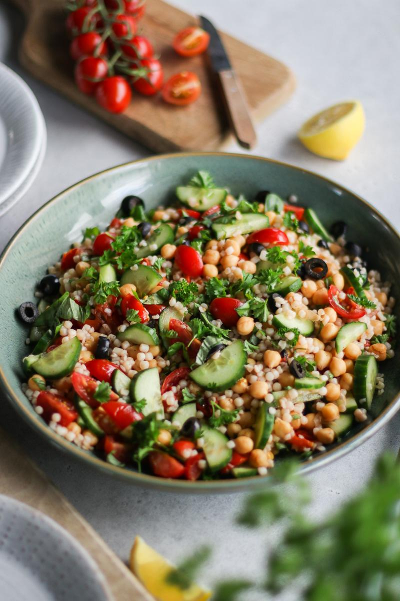

Warm Pearl Couscous Salad

Description
Pearl couscous is technically not couscous, but more of a pasta.
The small round wheat-based balls are pre-toasted, which gives them their unique chewy texture and nutty flavour.
This salad is delicious enjoyed warm as a meal, or cold as a summery-salad main dish or side dish.
Ingredients
Salad
- 1 cup (159 g) dry pearl couscous
- 2 tsp (10 mL) olive oil
- 2 cups (328 g) cooked chickpeas
- 2 cups (300 g) cherry tomatoes, quartered
- ½ tsp salt
- ¼ tsp ground black pepper
- ½ cucumber, sliced into half-moons
- ¼ cup (34 g) black olives, sliced
- 3 Tbsp (6 g) fresh mint leaves, chopped
- 2 Tbsp (3 g) fresh basil, chopped
- 2 Tbsp (2 g) fresh parsley, chopped (optional)
- ¼ cup (34 g) roasted unsalted almonds, chopped (optional)
Dressing
- 3 Tbsp (45 mL) extra virgin olive oil
- 3 Tbsp (45 mL) red wine vinegar
- ½ lemon, juiced
- ¼ tsp paprika powder
Steps
- Cook the couscous according to the package instructions, then drain.
-
Meanwhile, to a medium pan on medium-high heat, add the oil, chickpeas, tomatoes, salt, and pepper.
Cook for about 5 - 7 minutes, stirring occasionally.
Remove from the heat.
- In a small bowl, mix together the ingredients for the dressing.
-
To a large bowl, add the drained couscous, tomato and chickpea mixture, cucumber slices, olives, and fresh herbs.
Add the dressing, toss to combine, spinkle over the almonds, and enjoy!